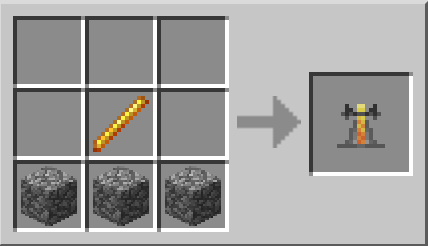
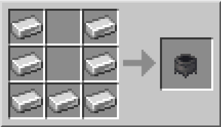
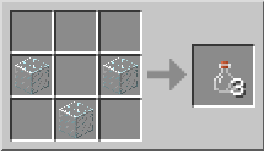
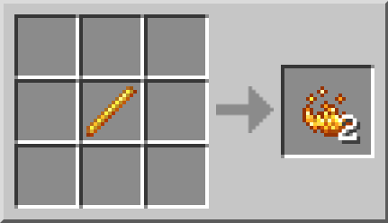

Sur cette page, je vais vous aprendre comment faire des potions.
Tout d'abord, pour pouvoir faire des potions, il vous faudra d'abord des pré-requis
Voici une liste des pré-requis nécessaires :
Pour votre alambic et la poudre de blaze, il vous faudra des batons de blaze tout en tuant des blazes se trouvant dans des forteresses du Nether
Voici les crafts de certains pré-requis
Craft de l'alambic :
Craft du chaudron :
Craft de la fiole (à remplir avec de l'eau) :
Craft de la poudre de blaze :
Il vous faudra aussi d'autre matériaux spécifique pour chaque potion, vous pourrez le remarquer en cliquant sur les potions de gauche :)